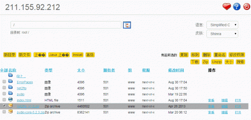
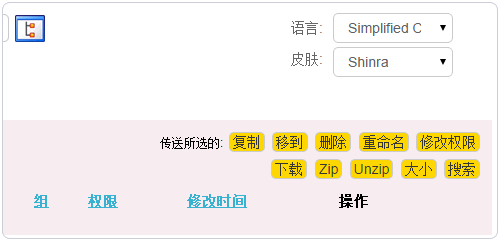
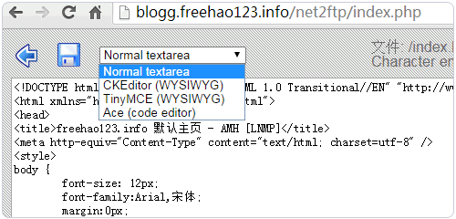
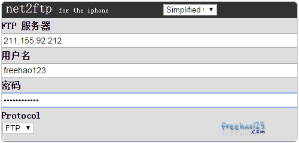
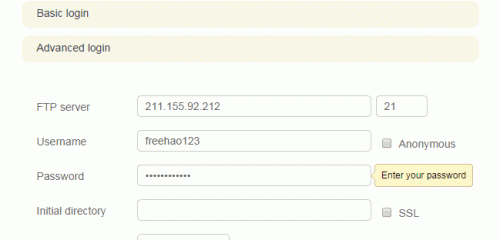

400-660-7096
想让企业在互联网上做得更好的企业家的不二之选！
实战 专业 落地 高效
想让企业在互联网上做得更好的企业家的不二之选！
实战 专业 落地 高效
经常有朋友在使用一些没有带文件管理器的空间时，苦于没有办法来解压上传的文件压缩包，而如果不先上传压缩包，直接上传文件夹的话耗费的时间太多。还有一些朋友希望将空间变成一个文件存储站，这时就需要一个功能足够多也足够强大的在线文件管理器了。
在线的Web文件管理器非常地多，尤其是以PHP在线文件管理器最多，但是真正能够满足我们的文件管理需求同时也容易安装和使用的Web文件管理器不是很多。本篇文章部落就精选四个界面友好、功能丰富和安装方便的Web文件管理器：net2ftp、Pydio、eXtplorer、KodExplorer。
Net2FTP相信多数人都曾经用过它，很多的免费空间就采用了Net2FTP，只要有浏览器，不必装任何客户端就可以随时进行文件的上传和下载服务，界面十分清爽简洁，带有多国语言，还有很多特色功能。另外Net2FTP官网也就是一个公共的FTP在线管理文件平台，通过Net2FTP官网可以上传文件到你的空间上。
Pydio，前身是AjaXplorer ，基于Web技术，有着Ajax、漂亮的UI，有类似本地资源管理器的操作习惯，支持多种访问方式，随处管理文件：网页、移动设备（IOS、Android），还支持PHP Command，支持本地文件管理以及第三方服务。Pydio已经不再是一个简单的在线文件管理器，实际上与OwnCloud一样可以搭建私人云了。
eXtplorer一直是sourceforge空间上的一个开源项目，基于PHP与ExtJS开发的文件管理器，你可以用它浏览服务器上的文件与目录。编辑，复制，移动，删除文件。创建新的文件和目录。改变文件的权限属性功能强大，界面友好，是一个不可多得的PHP在线Web文件管理器。
KodExplorer是国人开发的一款在线Web文件管理器，具备了完备的文件管理功能，浏览器端享受本地化的体验，强大的在线文件编辑器，对中文支持良好，KodExplorer实际是一个在线Web操作系统，支持在线管理图片、播放音乐视频、编辑和查看文件等，类似于个人Web云存储。
免费的在线Web文件管理器:Net2FTP,Pydio,eXtplorer,KodExplorer–功能强大
一、经典和可远程FTP-Net2FTP安装与使用
1、Net2FTP官网：
官方网站：http://www.net2ftp.com/
2、直接下载Net2FTP程序包，解压然后上传到空间上，用浏览器打开Net2FTP路径，就可以访问Net2FTP了。输入你的FTP服务器账号和密码就可以登录Net2FTP管理空间的文件了。（点击放大）

3、这是Net2FTP的Web文件在线管理界面，界面简洁，有简体中文等多种语言，Net2FTP显示的文件范围取决于你的FTP账户的权限，如果你的FTP账户只限于某一个Web目录，则Net2FTP也只显示该目录下的文件。（点击放大）

4、Net2FTP可以直接复制、删除、编辑、移动和解压缩文件。

5、Net2FTP提供了强大的在线文件编辑器，可以直接在线编辑和修改文件，保存后文件自动上传到空间上。

6、现在Net2FTP已经提供了手机界面，直接在Net2FTP点击切换。

7、Net2FTP手机版本界面非常适合手机上使用Net2FTP。
